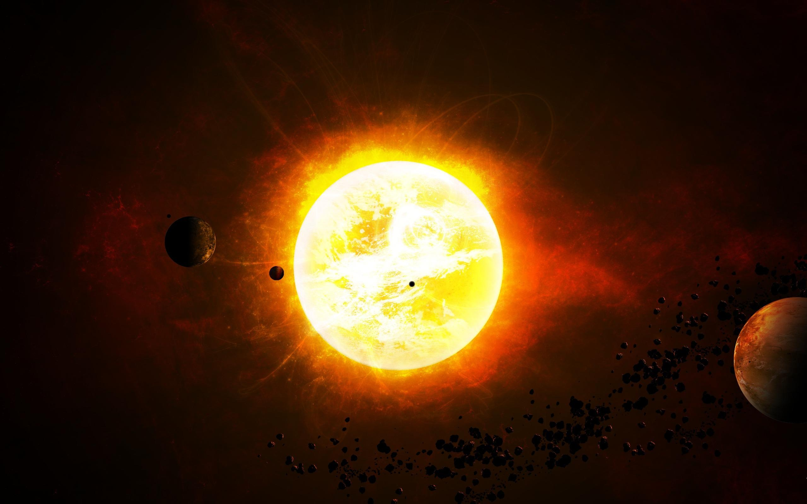
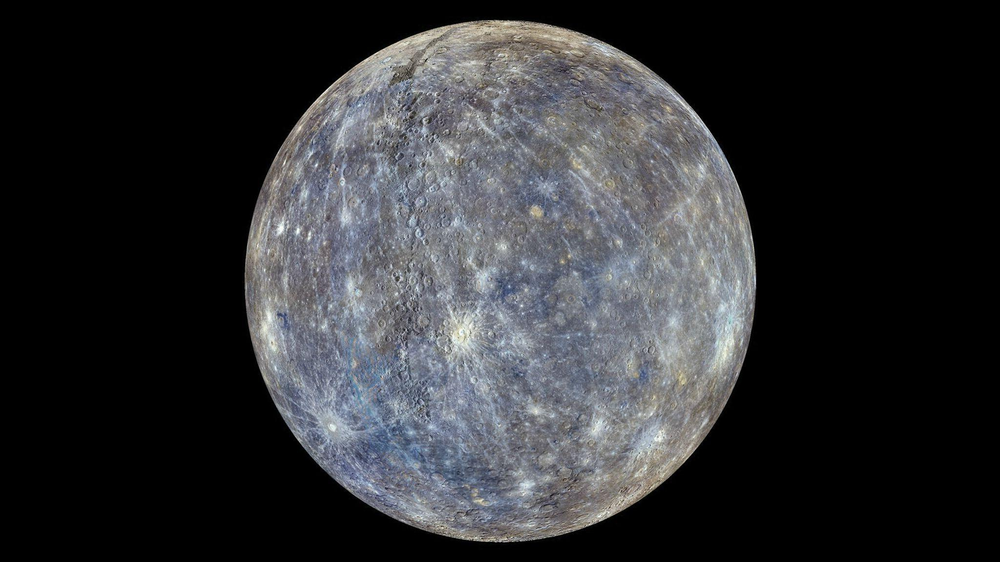
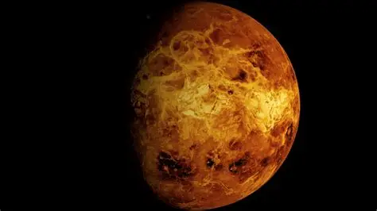
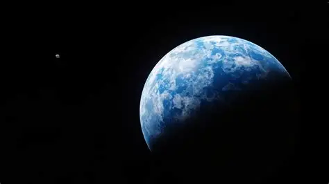
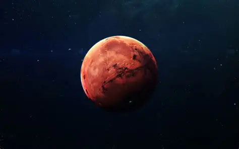
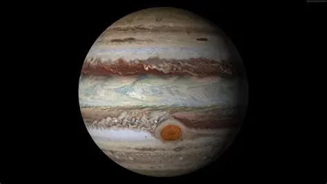
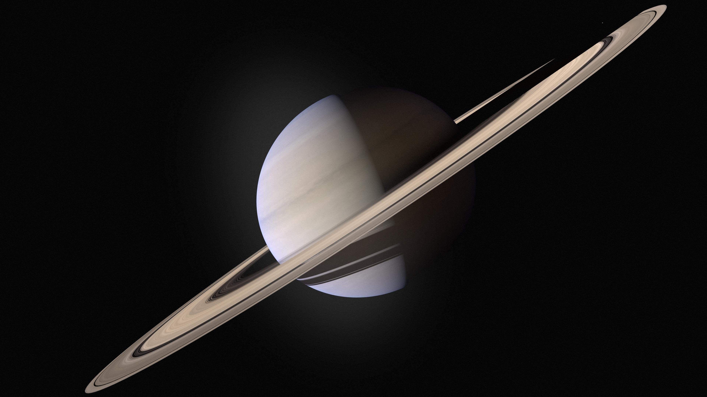
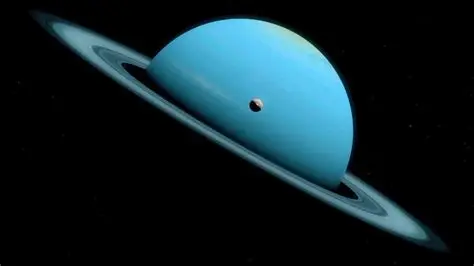
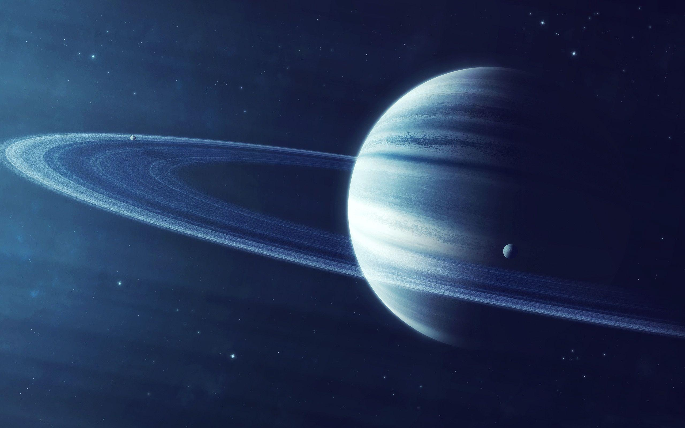

Explore o Sistema Solar
Descubra os mistérios e beleza do nosso sistema planetário.
Descubra os mistérios e beleza do nosso sistema planetário.
O Sistema Solar é formado pelo Sol e por todos os corpos celestes que orbitam ao seu redor devido à sua gravidade. Ele possui oito planetas, além de planetas anões, luas, asteroides, cometas e outros objetos. Cada um desses mundos possui características únicas que tornam o nosso sistema planetário fascinante.

O Sol é a estrela no centro do Sistema Solar. Sua enorme gravidade mantém os planetas em órbita e sua energia é fundamental para a vida na Terra.
Visit Sol
Mercúrio é o menor e mais próximo do Sol dos oito planetas do Sistema Solar. Sua superfície é cheia de crateres e não tem atmosfera significativa.
Visit Mercúrio
Vênus é o segundo planeta do Sistema Solar em ordem de distância ao Sol. É conhecido por ser o planeta mais quente e por ter uma atmosfera densa e tóxica.
Visit Vênus
A Terra é o terceiro planeta do Sistema Solar em ordem de distância ao Sol. É o único planeta conhecido que abriga vida.
Visit Terra
Marte é o quarto planeta do Sistema Solar em ordem de distância ao Sol. É conhecido por ser o planeta vermelho e por ter uma atmosfera relativamente fina.
Visit Marte
Júpiter é o quinto planeta do Sistema Solar em ordem de distância ao Sol. É o maior planeta do Sistema Solar e é conhecido por sua Grande Mancha Vermelha.
Visit Júpiter
Saturno é o sexto planeta do Sistema Solar em ordem de distância ao Sol. É conhecido por seus anéis visíveis e por ser um planeta gasoso.
Visit Saturno
Urano é o sétimo planeta do Sistema Solar em ordem de distância ao Sol. É um planeta gasoso que gira sobre seu eixo de forma lateral.
Visit Urano
Netuno é o oitavo planeta do Sistema Solar em ordem de distância ao Sol. É um planeta gasoso e é conhecido por ser o planeta mais distante do Sistema Solar.
Visit Netuno